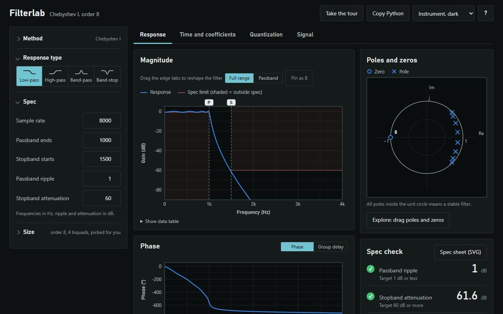
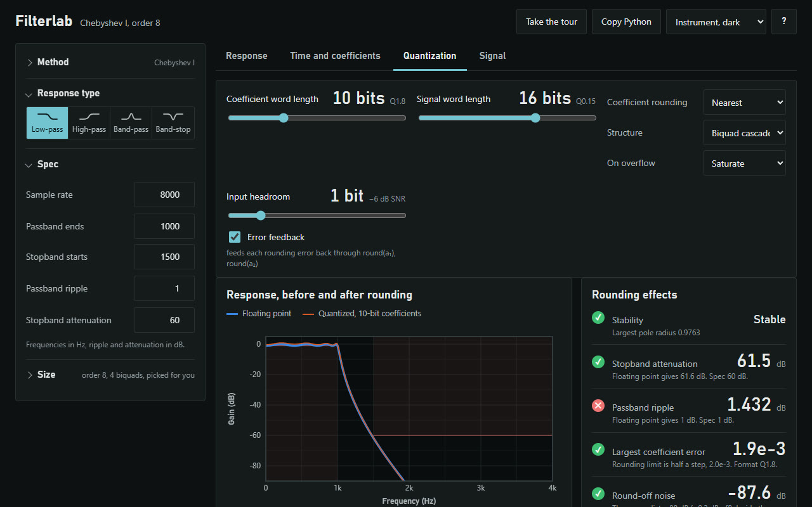
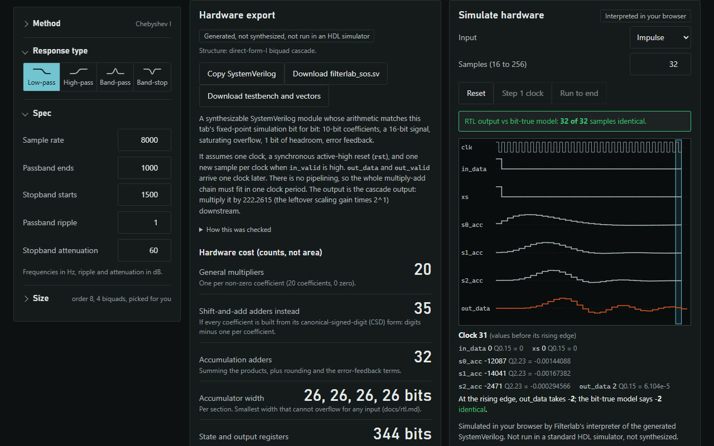
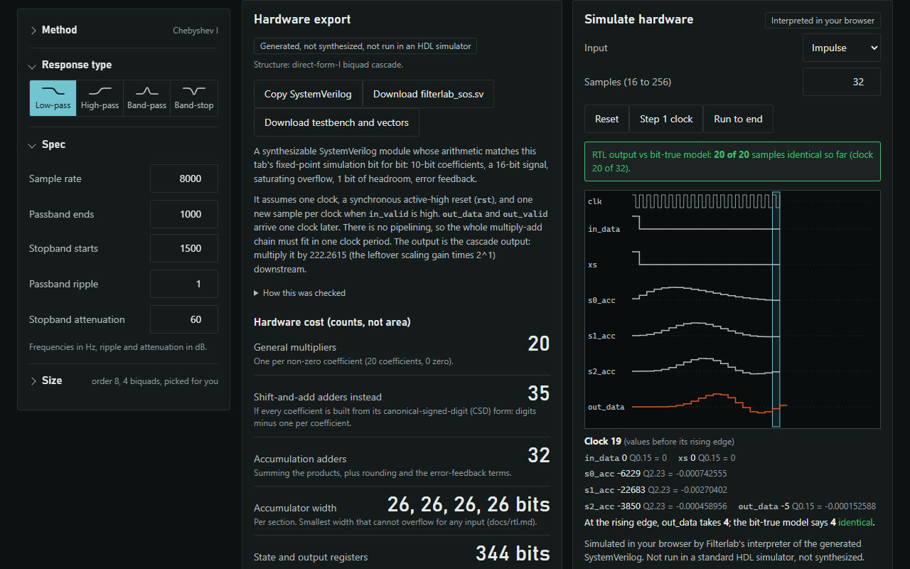
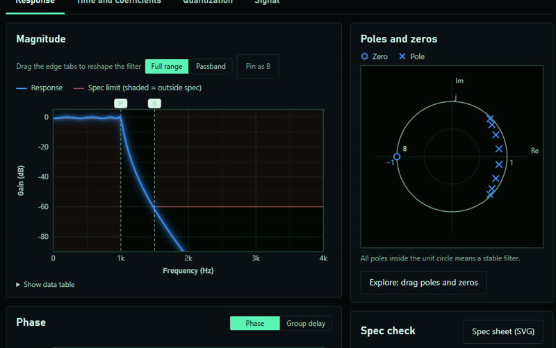
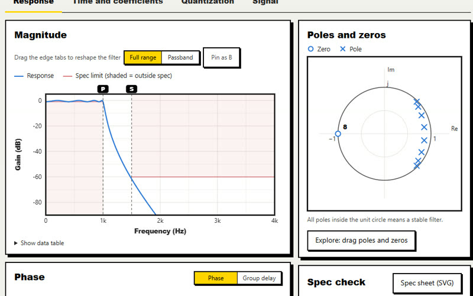
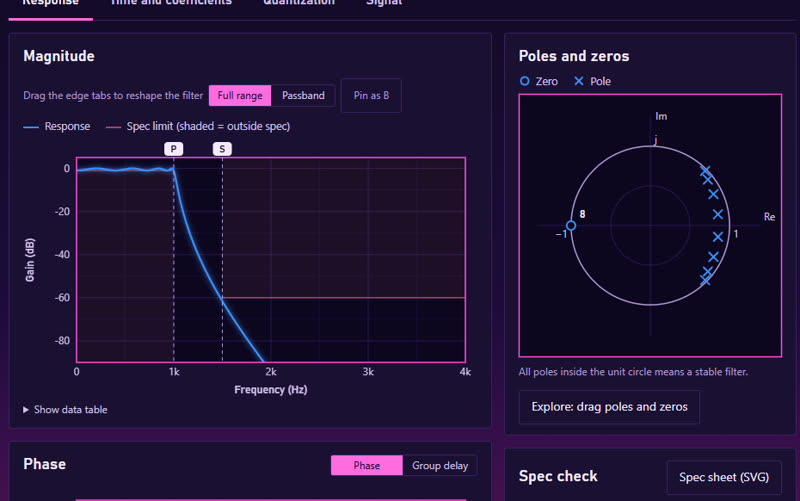
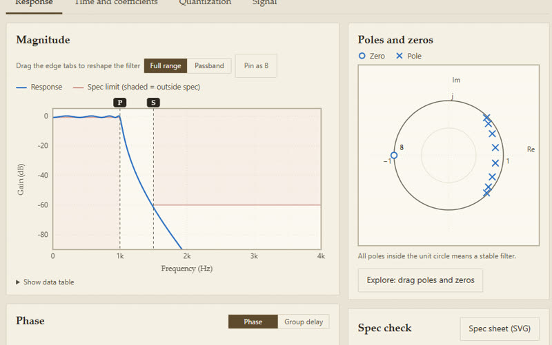
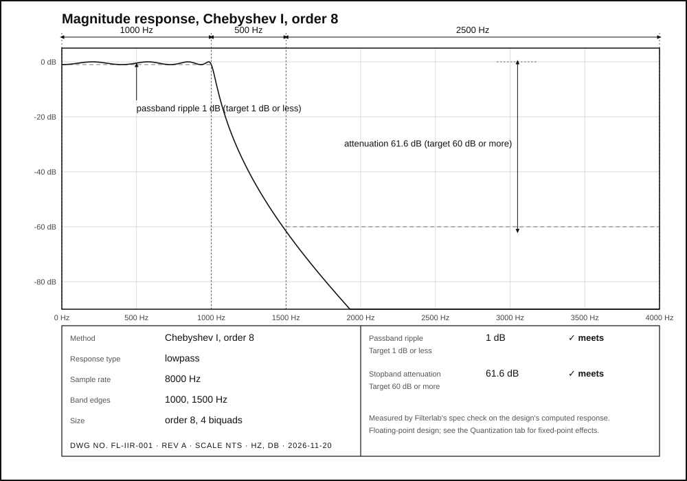

Filterlab is a filter design bench that runs in one offline web page. Design FIR and IIR filters, see what fixed-point rounding does to them, then export SystemVerilog and simulate it clock by clock.
The real app, step by step: design a Chebyshev low-pass, round it to 10-bit coefficients, export the SystemVerilog, and run it in the page.




A numpy library and a line-for-line JavaScript port, cross-checked to machine precision, behind one interface.
Windowed and Parks-McClellan FIR, Butterworth, Chebyshev and elliptic IIR. Drag the band edges; the order search does the rest.
Pick a word length; watch poles move and the stopband leak. Noise is measured against theory.
A synthesizable module, testbench and vectors whose arithmetic matches the bit-true model.
module filterlab_sos ( input logic clk, rst, in_valid, input logic signed [15:0] in_data, output logic signed [15:0] out_data ); // section 0: b = 380 760 380, a = 1 -25474 10638 assign s0_acc = (10'sd380) * xs + (11'sd760) * s0_x1 + (10'sd380) * s0_x2 - (-16'sd25474) * s0_y1 ... assign s0_yr = s0_accr >>> 14;
An interpreter runs the generated text with SystemVerilog's width rules and compares every sample.
From Instrument to Pixel art; the plots stay readable in all of them.




Every number has a test behind it.
Download any design as a dimensioned SVG.

Each theme styles the frame; the plot screens stay solid and every trace pair passes a colour-vision check. Click one to open the app in it.
Said plainly, because a tool that rounds things for a living should not round its own claims.
The SystemVerilog has not been run in a standard HDL simulator or synthesized. Two interpreters written for this project check it; running the testbench in Icarus Verilog would close that gap.
The hardware report counts multipliers, adders and register bits. It makes no claim about area, clock speed or power.
Parks-McClellan designs of about 160 taps and more currently return an empty filter that the spec check wrongly passes. The automatic order search never goes there; a manual order can.
The browser simulation uses doubles, exact to 253, so signal and coefficient words are limited to 20 and 24 bits there. The Python library has no such limit.